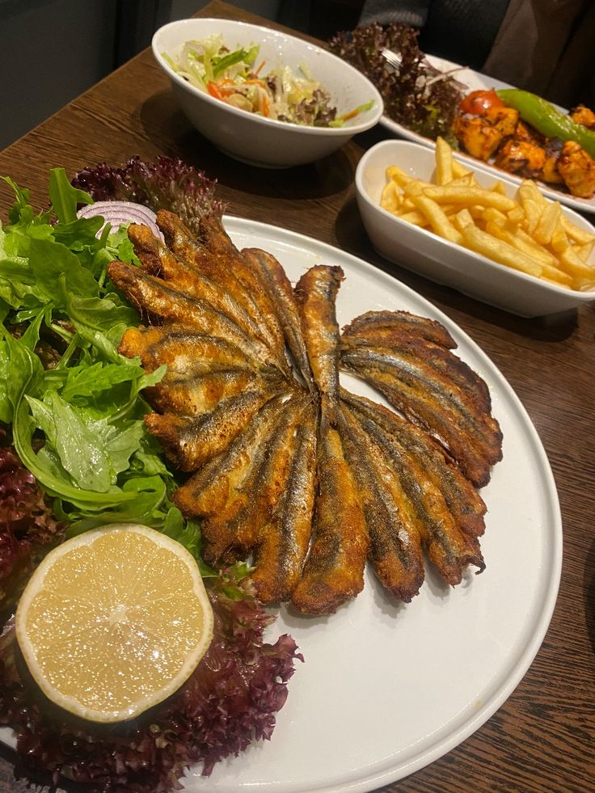

Trabzon
Hamsinin lezzeti, yaylaların serinliği Trabzon'da Karadeniz'in coşkusu yaşanır.
Trabzon'da her yıl düzenlenen camileri festivali, şehre renk katmaktadır.
Trabzon mutfağı, özellikle tarhanası ile ünlüdür.
Trabzon tarihi yapılarıyla dikkat çeker ve özellikle termal kaplıcaları ile bilinir.

Ayasofya Müzesi
Bizans döneminden kalma freskleri ve mozaikleriyle ünlü müze.

Yeni Cuma Camii
Bizans döneminden kalma, Osmanlı döneminde camiye çevrilen yapı.

Ortahisar Camii
Fatih Sultan Mehmet'in fethinden sonra camiye çevrilen tarihi yapı.

Akçaabat Köfte
Özel baharatlarla hazırlanan, Trabzon'un meşhur köftesi.

Hamsi Tava
Karadeniz'in meşhur hamsi balığının özel pişirme tekniğiyle hazırlanan eşsiz lezzeti.

Hamsiköy Sütlacı
Trabzon'un Hamsiköy yaylasında özel süt ve pirinçle hazırlanan, eşsiz lezzetteki geleneksel tatlı.